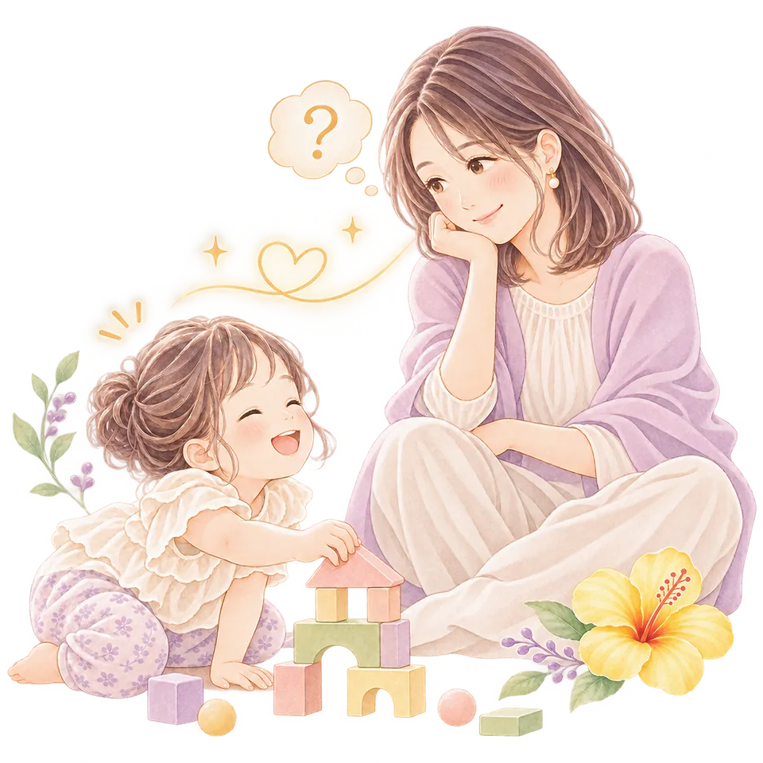
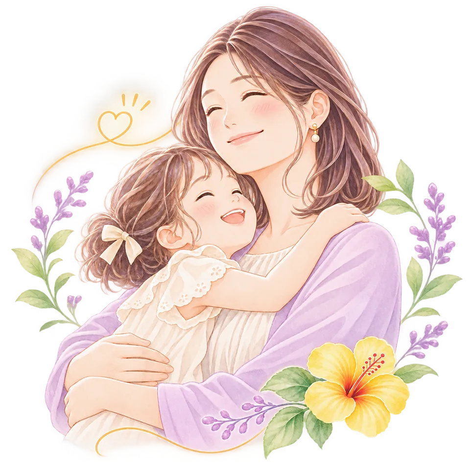
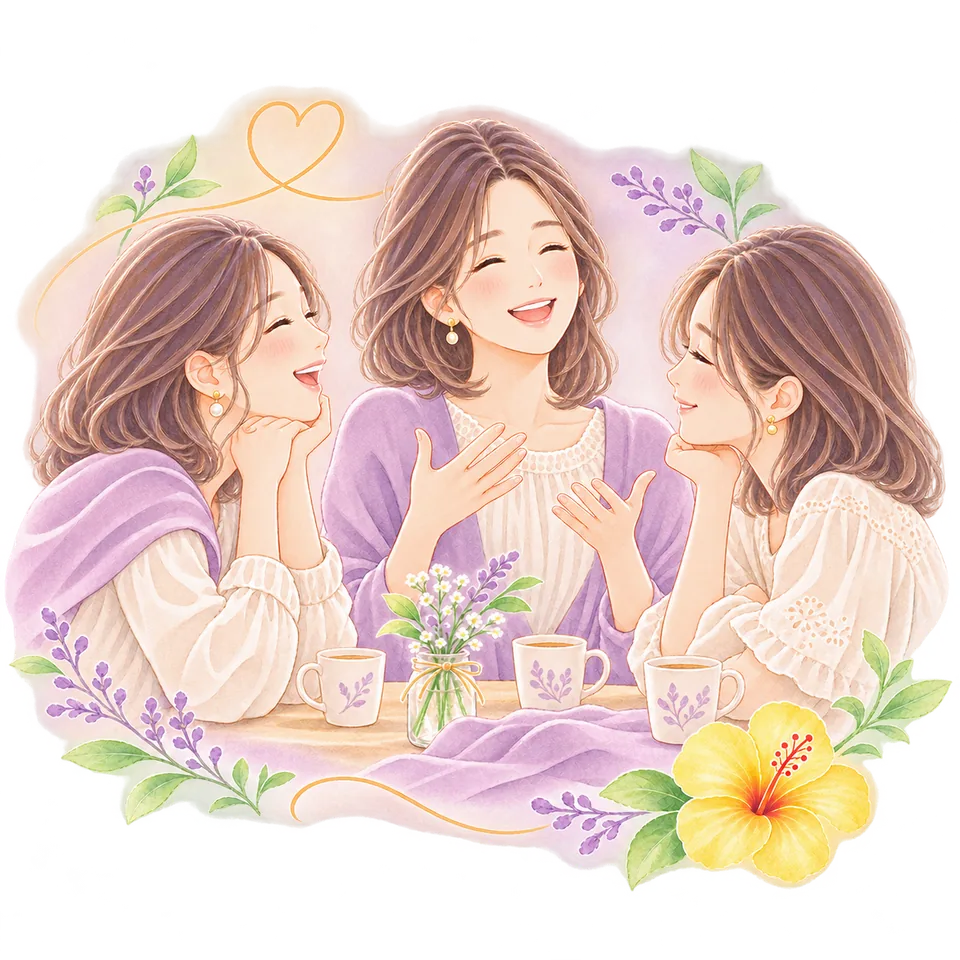
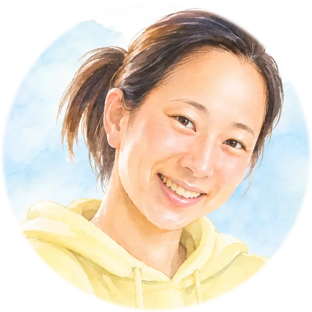
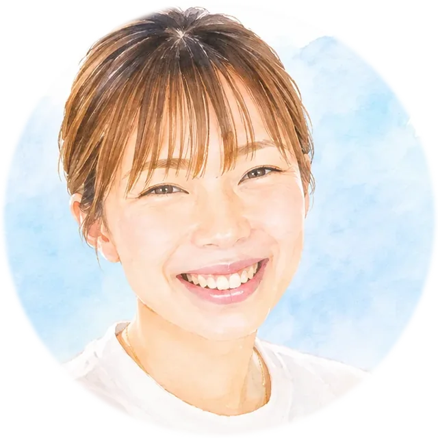
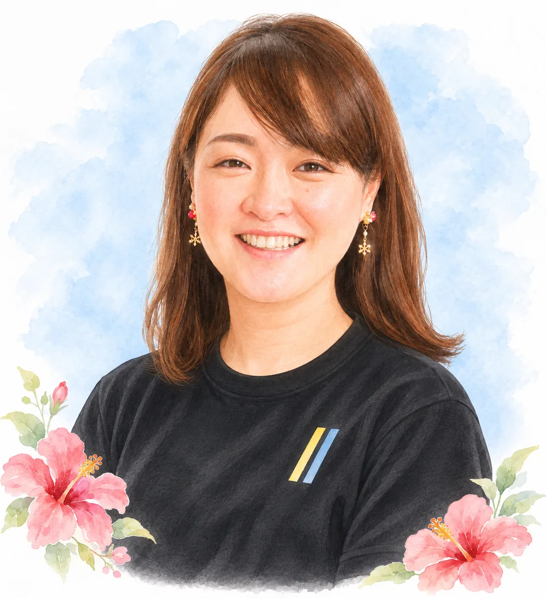

朝のイライラ
こんな気持ち、ありませんか？
- イヤイヤや癇癪、どう対応したらいい？
- 調べても、わが子に合う方法がわからない…
- ベビーマッサージで親子の時間をもっと楽しみたい
- 子育ての知識を、もっと自分の力にしたい
悩みの入口も、学んでみたい理由も人それぞれ。
でも、「今よりもっと、子育てを楽しみたい」。
そんな思いを、CRCは大切にしています。
CRCって、何を学べるの？
「あのとき知っていれば、あんなに悩まなかったのに…」
そんな子育ての後悔を、これから少しでも減らせたら。
CRCは、0〜10歳の子どもの発達や心理、毎日の困りごとへの対応を、家庭での実践とともに学べる講座です。

CRCで学べることの、ほんの一例
「もっと早く知りたかった！」を、
今からあなたの子育てに。
朝の「早くして！」を減らす！
イヤイヤ期
思春期の親子関係にもつながる！
イヤイヤ期の「正しい対処法」
発達への不安
「この子、大丈夫？」の答えは検索しても見つからない！？
不安を減らすために知っておきたい発達の判断ポイント
ベビーマッサージ・親子のふれあい
ベビーマッサージだけで終わらない！
0〜10歳の親子関係を育む
「ふれあい」の実践法
AND MORE...
もちろん、学べるのは
これだけではありません。
子どもの成長に合わせた発達・心理の学び、スキンケア、家族との関係、ママ自身の心や暮らしまで。
多くのママがつまずきやすい子育てのポイントを、幅広く学び、家庭で活かしていきます。
実は、保育士さんも学びに来ています。
育休中の保育士さんが、子育てと仕事の両方に活かせる学びを深めることも。専門職の方はもちろん、子育て中のママにも開かれた講座です。
子育てのために学び始めた。
その先の私に、ちょっと驚く。
CRCで目指すのは、知識を増やすことだけではありません。

- 「また怒っちゃった…」と落ち込む毎日から「今日は笑えた」が、少しずつ増える毎日へ。
- 「何を信じればいいの？」と不安だった日々からわが子のために、自分で選べる安心感へ。
- 子育てで精いっぱいだった私にも「新しいことをやってみたい！」と思える未来が。
目の前の困りごとをきっかけに始めた学びが、
ママ自身の自信や、未来へのワクワクにつながることも。
学んだあとも、一人にしない。

学んだことを家で試してみると、新しい疑問が出てくることもあります。
CRCには質問できる機会や、同じように学ぶ仲間とのつながりも。うまくいかなかった日も、一人で抱え込まずに話せる場所を大切にしています。
「私だけじゃなかった」
「また明日、やってみよう」
講座修了後も、希望する方が仲間とつながれる機会を大切にしています。
REAL VOICES
CRCで学んだ
ママたちの声
実際に学んだママの変化を知って、CRCに興味を持つ方もいます。
2人の受講生が語ってくれた言葉をご紹介します。

子育てへの不安から
自分の子育てが正しいのか、わからなかった。
受講前：仕事と育児に追われ、子どもと過ごす時間の少なさや、自分の子育てが合っているのかという不安を抱えていました。
「知識だけでなく、メンタル面での学びも多く、講座も毎回楽しくて気持ちが上がるんです！」
Yさん ｜ 受講当時の感想

自分の未来への期待へ
仕事と家事の繰り返しで、毎日がつまらなかった。
受講前：仕事と家事の繰り返しに物足りなさを感じていた日々。子育て経験を自分の強みにしたいと、学び始めました。
「次はなにを知れるのかな？」と未来にワクワクできるようになったんです！！
Kさん ｜ 受講当時の感想
※掲載の感想は個人の体験であり、すべての方に同じ変化をお約束するものではありません。
ママの笑顔も、ママ自身の夢も、大切にしたい。

子育ての不安を少しでも減らしたい。
子どものことを知る楽しさを届けたい。
一人で頑張りすぎているママに、安心して話せる時間を届けたい。
そして、ママ自身にも、自分の人生に希望や夢を持ってほしい。
そんな思いから、CRCは生まれました。
チャイルドリアリングコーチ® 創設者・主宰 永谷亜季子
プロフィール
- 小学校教諭・幼稚園教諭免許／保育士資格
- 育児不安・イライラ専門家
- 子どもの行動の「なぜ？」を、発達や心理の視点から伝える活動を行う
あなたの子育ても、 あなたの人生も、 ここからもっと輝いていける。
子育てに、たった一つの正解はありません。
大切なのは、子どもを知り、自分を知り、
その家庭らしい答えを見つけていくこと。
CRCは、その歩みを応援します。
CRC PERSONAL CONSULTATION
「私も、子育てを変えられるかな？」
その気持ちを、次の一歩に。
朝のイライラ、イヤイヤ期、子どもの発達への不安。
あるいは、ベビーマッサージから広がる学びへの興味。
あなたが今、「もっと知りたい！」と思ったことを、聞かせてください。
個別相談では、CRCで何を学べるのか、どんなふうに学ぶのか、今のあなたに必要な学びなのかを、一緒に考えていきます。
CRCの個別相談について聞いてみるボタンから公式LINEのトーク画面へ。
入力されたメッセージを送信してください。
PCでご覧の方へ
スマホのカメラでこのQRコードを読み取ると、
CRC個別相談のLINEトークに進めます。
トーク画面に表示される相談希望の文章を
送信してください。
QRコードを読み取れない場合は、LINEでIDを検索してください。
ご相談いただいたからといって、受講を決める必要はありません。
ボタンからトークに進めない場合は、こちらから公式LINEを開いて
「CRC個別相談」と送ってください。